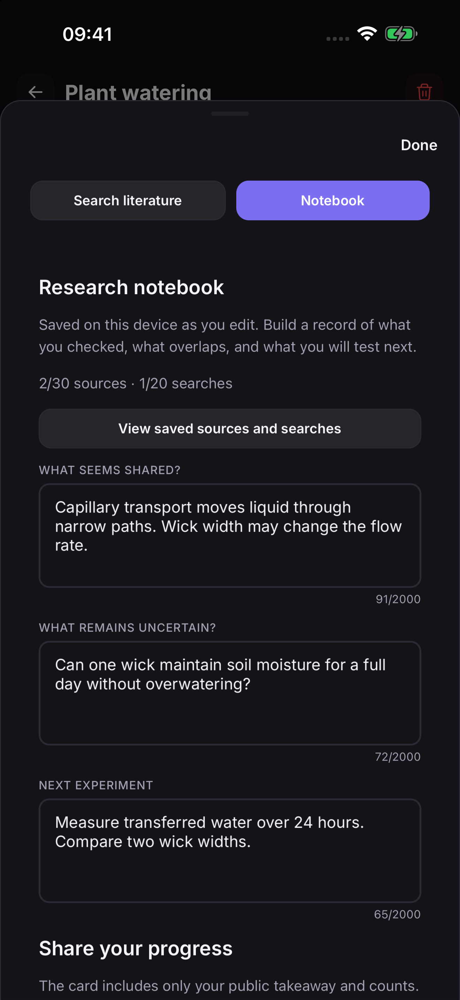
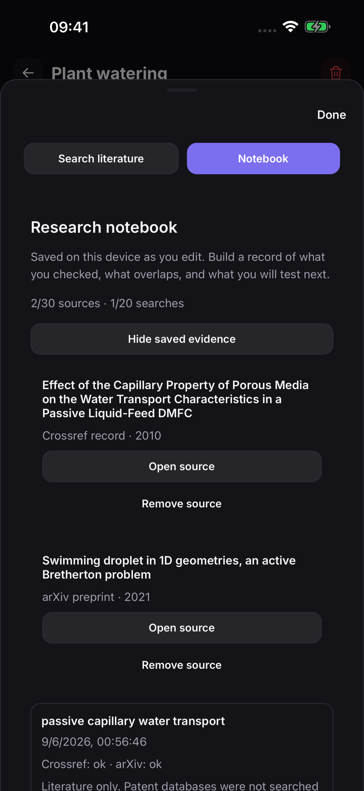
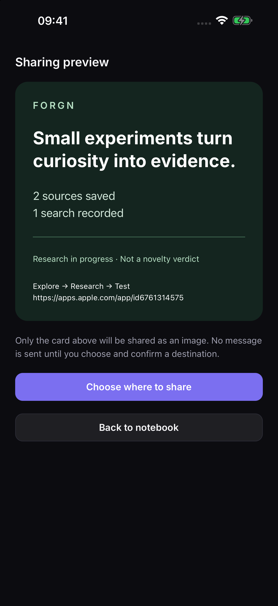

Research an idea. Keep the evidence. Decide what to test next.
Get Forgn on the App StorePreview of version 1.3, pending App Store approval. Actual app screens with an example research project.



Coming in 1.3: project research notebooks, previewed sharing cards and recovery exports. Available after App Store approval. The current app interface is English.
Your work is stored locally. No account or developer-operated backend is required. Literature searches send the words you choose to Crossref and arXiv; web clipping contacts your chosen website. In 1.3, sharing and recovery export send only what you explicitly choose to a destination you select.
An empty result is not a green light. Forgn searches Crossref and arXiv live and prepares patent queries for you to run; it does not hold a patent database on the device. A missing match is not evidence that an idea is new. Version 1.3 also identifies sources that could not be checked because of a connection or response problem.
Questions, bug reports and refund questions: brkekahraman@icloud.com — usually answered within two business days.
Start by checking related work. Forgn recognises established mechanism combinations with its local rules, searches Crossref and arXiv, and prepares browser queries for Google Patents, Espacenet and Lens. Literature records and preprints are starting points for investigation, not an exhaustive patent search.
Save selected literature sources to a project, record the date and scope of each search, and write down the shared mechanism, the unanswered question and your next measurable experiment. Notes save on the device as you edit. Each notebook holds up to 30 selected sources and 20 recorded searches; nothing is silently evicted.
Write an optional public takeaway and preview a progress card before opening the system share sheet. The card includes only that takeaway and source/search counts. Private project titles, queries, sources and notebook notes are excluded.
It takes a distinctive term from one of your notes and applies it to a real mechanism in another — only when the two share genuine common ground. Every suggestion says what moved, where it came from, and what connects them.
Not a build manual. Forgn turns an idea into the order in which it could die: prior art first, then each known failure mode, most fatal and cheapest-to-test first. Every step says what to measure and asks you to write the threshold down before you run the test.
Documented failure modes, each triggered by an actual design choice, each with alternatives and a reason. These are free, always.
A map of your own archive: buildings are the mechanisms your notes use, and the figures walking between them are the notes themselves. When two meet you get a real transfer candidate.
Because there is nothing to sign in to. Your archive lives in this app on this device. Protect your device and keep an external recovery copy of important work; we do not hold a server copy.
Local notes, saved research and the rule-based engine work offline. Literature searches, web clipping, external links and App Store purchases or restoration need a connection. The sharing destination may also require internet access.
In 1.3, Profile → Your data → Export recovery copy creates a JSON file containing your archive, projects, research notebooks and original stored data needed for recovery. Save it to a private location using the system share sheet. Recovery export is free and stays available after a subscription ends. It is not automatic cloud sync.
Archive → Scan Page → tap the text box, then choose Scan Text on the keyboard. Your iPhone's own text recognition reads the page and writes it into the box. The photo is never saved and never sent — the app never receives an image at all.
Free: up to 25 archive entries, literature discovery, reality walls and the coverage map. Version 1.3 adds free project research notebooks, sharing cards and recovery export. Pro: cross-pollination, full risk-ordered plans and an unlimited archive. Existing notes remain accessible if a subscription ends.
Forgn Pro is an auto-renewable subscription, monthly or yearly; the price for your region is shown in the app before you buy. Payment is charged to your Apple Account when you confirm, and the subscription renews automatically unless you cancel at least 24 hours before the end of the current period. Terms of Use (EULA) · Privacy Policy
No. Forgn screens for prior art; it does not give legal advice, and no result in the app is a legal opinion on patentability, freedom to operate or infringement. Before you file, license or invest on the strength of a search, talk to a patent attorney.
That is the most useful thing Forgn can tell you, and it is not a stop sign. It moves the question: find the published limit of the known version, and make your contribution the specific thing you add to it.
Town is built from mechanisms your notes describe. A note that says what something is but not how it works has no place to stand yet. Add a sentence about the mechanism and it appears.
Subscriptions are managed by Apple, not by us: iPhone Settings → your name → Subscriptions. Cancelling there stops future charges. Your archive and your export stay with you.
Berke Kahraman
brkekahraman@icloud.com
Istanbul, Türkiye
Forgn screens for prior art. It does not give legal advice. Forgn is an independent app; Crossref, arXiv, Google Patents, Espacenet and Lens are independent services and are not affiliated with Forgn.